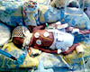

21st July 2001
Every time we visit Poppy at the moment she seems to have put on more weight. She certainly seems to have grown more plump. Poppy's bowels have started working well now; the massage and an increased milk consumption to 2 ml an hour has done the trick. The swings with her oxygen levels have evened out a bit more making her seem much more stable.
20th July 2001
Poppy is well and seems contented, Sharon gave her a tummy massage today, because she hasn't had a poo for a couple of days; she coped with the touch very well. Support from the ventilator is being decreased and it is expected that she will come off it on to CPAP early next week. Poppy's milk feeds have been increased to 1ml every hour today.
19th July 2001
Poppy had another blood transfusion last night, and she is looking a lot better today. She is having milk again (1ml every two hours) and has stopped all antibiotics because her infection has gone. Her breathing is still erratic but this is currently being put down to the fact that her lungs are still immature and not her heart valve, which has closed up to the point of being almost undetectable - good news.
18th July 2001
The oxygen saturation levels in Poppy's blood have been swinging quite a lot over the last week and they are continuing to do so on the ventilator today. It was thought that perhaps this was happening because she was getting tired, but it could be that the opened valve (see 16th June) in her heart which was thought to be insignificant, has become more significant and is causing the swings. She is happy in herself in spite of these swings and should feel even better tomorrow after the blood transfusion she will receive tonight. Sharon started to massage oil into Poppy's skin over the weekend to make her feel good and she enjoyed having her hand arm and chest smoothed this evening. She's not too keen on her knees being touched though!
17th July 2001
16th July 2001
15th July 2001
Poppy has been put back on the ventilator this afternoon. She was becoming tired from breathing on her own and needs a rest. She has developed an infection in part of her lung which is being treated with antibiotics. Her milk has been stopped while she settles into her new situation.

Poppy was weighed last night and is now 860gsm or 2lbs 2oz. She has been experiencing bradycardias, which is when her heart rate slows down. This has happened a few times over the last few days, but is normal for a baby her age because her brain is not mature enough to control it properly. Recent blood test results have shown that she has no infections, which is excellent news.
Poppy spent a comfortable day today resting. She is continuing with 1ml every two hours of milk and the doctors are letting her rest and seeing how she copes with the milk before increasing the amount she is given.